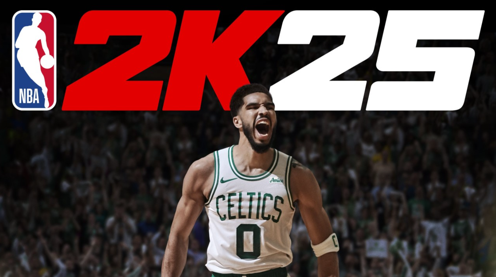

NBA 2K25 is the latest entry in the long-running basketball simulation series developed by Visual Concepts and published by 2K Sports. Featuring updated rosters, enhanced graphics, and new gameplay mechanics, it delivers the most authentic NBA experience yet.
Play as your favorite NBA teams and players across modes like MyCareer, MyTeam, and The W. NBA 2K25 introduces improved ball physics, dynamic crowd reactions, and enhanced AI for a more immersive court experience.
| Component | Minimum | Recommended |
|---|---|---|
| OS | Windows 10 (64-bit) | Windows 10/11 (64-bit) |
| Processor | Intel Core i3-6100 / AMD FX-6300 | Intel Core i5-9600K / AMD Ryzen 5 3600 |
| Memory | 8 GB RAM | 16 GB RAM |
| Graphics | NVIDIA GTX 750 Ti / AMD R7 360 | NVIDIA GTX 1660 / AMD RX 590 |
| Storage | 60 GB SSD | 60 GB SSD |
Get the official PC version of NBA 2K25 from the verified source below:
🔽 Download from Steam